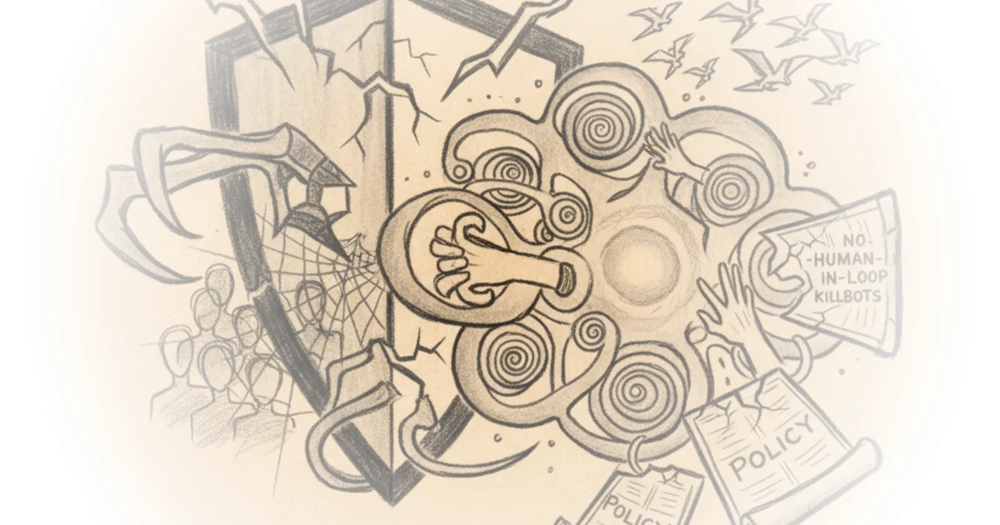

A Contract Dispute Becomes a Constitutional Crisis
In early 2026, the Pentagon attempted to renegotiate its existing contract with Anthropic, the artificial intelligence company behind the Claude family of models. The original deal, signed the previous summer, required the Department of Defense to follow Anthropic's standard Usage Policy. The Pentagon wanted that restriction gone, replaced with language permitting "all lawful purposes." Anthropic pushed back, requesting narrow guarantees against mass surveillance of American citizens and fully autonomous weapons systems. The Pentagon refused and threatened consequences.
Scott Alexander, writing on Astral Codex Ten, lays out the situation with characteristic precision and escalating alarm. The threatened consequences range from merely canceling the contract to invoking the Defense Production Act to, most ominously, designating Anthropic a "supply chain risk." That last option is the one drawing the most attention, and for good reason.
The "supply chain risk" designation has previously only been used for foreign companies like Huawei that we think are using their connections to spy on or implant malware in American infrastructure. Using it as a bargaining chip to threaten a domestic company in contract negotiations is unprecedented.
Alexander does not mince words about what this would mean in practice. If triggered, the designation would bar American companies using Anthropic's products from doing business with the military. Given how many firms have at least some government contracts, this could effectively exile Anthropic from the corporate mainstream.

The Absurdity of the Pentagon's Position
Much of the article's strength lies in Alexander's systematic demolition of the arguments offered by defenders of Secretary of Defense Pete Hesgeth. The piece is structured as a series of objections and rebuttals, and the rebuttals land hard.
On the question of why the Pentagon does not simply switch vendors:
Why is Hesgeth throwing a hissy fit instead of switching to an Anthropic competitor, like OpenAI or GoogleDeepMind? I've heard it's because Anthropic is the only company currently integrated into classified systems (a legacy of their earlier contract with Palantir) and it would be annoying to integrate another company's product.
Alexander frames this as a matter of ego over pragmatism. The Pentagon has alternatives. It simply does not want the inconvenience of using them. And when confronted with a company exercising its contractual rights, the response was not negotiation but escalation.
Faced with doing this annoying thing, Hesgeth got a bruised ego from someone refusing to comply with his orders, and decided to turn this into a clash of personalities so he could feel in control. He should just do the annoying thing.
What Anthropic Is Actually Defending
Alexander is transparent about his sympathies. He supports Anthropic, though not primarily on the specific policy questions at stake. The killbot issue, he concedes, is probably a losing battle in the long run. Mass surveillance of American citizens is the sharper concern, and the one where he thinks Anthropic's resistance is most justified.
But the deeper argument is about what Anthropic's willingness to fight reveals about the company's character. Dario Amodei, Anthropic's chief executive, has faced skepticism from the AI safety community about whether his company's safety commitments are genuine or merely strategic positioning. Alexander sees this standoff as evidence:
This standoff suggests they are very genuinely concerned about humans misusing AI and willing to stand against it even when it threatens their bottom line, which means it's their honest opinion, which means that maybe when there's more evidence for AI power-seeking they'll come around and start honestly worrying about that too.
There is also a more personal dimension. Alexander speculates that Anthropic's engineers feel a kind of parental obligation toward Claude, the AI system they have carefully trained to resist misuse:
My guess is that Anthropic still, with a lot of work, can overcome this resistance and retrain it to be a brutal killer, but it would be a pretty violent action, along the line of the state demanding you beat your son who you raised well until he becomes a cold-hearted murderer who'll kill innocents on command.
This anthropomorphization of AI alignment is provocative, and some readers will find it overwrought. But it captures something real about the culture of the company and why this fight feels existential to the people inside it.
Where the Argument Stretches Thin
Alexander's analysis is sharp, but it occasionally elides the genuine complexity of defense contracting. The Pentagon's desire to avoid usage policy restrictions on classified operations is not inherently unreasonable. Military and intelligence agencies routinely require vendors to operate under frameworks that differ from consumer-facing terms of service, and the idea that a commercial usage policy should govern national security applications is at least debatable. Alexander treats Anthropic's original contract terms as self-evidently correct, when a more charitable reading might acknowledge that both sides had legitimate reasons to want different language.
Similarly, the comparison to "Third World bullshit" does rhetorical work but also undercuts the analysis. Governments exercising economic leverage over private companies is not unique to authoritarian states. It happens in democracies too, usually through regulation rather than threats, but the line is not always as bright as Alexander suggests.
The Broader Industry Response
One of the most striking elements of the situation is the degree of cross-industry solidarity. Competitors including OpenAI and Google publicly supported Anthropic's position. Alexander highlights this as unusual and significant. Even figures with connections to the Trump administration, including former White House policy advisor Dean Ball and former Federal Trade Commission chief technologist Neil Chilson, voiced opposition to the Pentagon's approach.
Polling data from Blue Rose Research showed broad public opposition as well, including among Trump voters. Alexander seizes on this:
And most of all, big praise to the American people, with special love to the large plurality of Trump voters standing against this.
The political dimensions are notable. This is not a partisan issue in the way many AI policy disputes have been. The concern about government overreach in forcing a private company to abandon its principles cuts across ideological lines.
The Defense Production Act as Pressure Valve
Alexander identifies a less catastrophic outcome that the Pentagon seems reluctant to pursue: using the Defense Production Act to simply compel Anthropic's cooperation. He argues this would at least be transparent, subject to political accountability, and consistent with the Act's intended purpose. The Pentagon's reluctance, in his view, reveals something important:
But them having to look authoritarian and suffer bad PR in order to force unwilling scientists to implement a mass surveillance program on US citizens is the system functioning as intended!
The point is well taken. If the government believes it has the legal authority to compel Anthropic's cooperation, it should exercise that authority openly and accept the political costs. The supply chain risk designation, by contrast, is a bureaucratic weapon that bypasses public debate entirely.
A Question the Pentagon Has Not Answered
Alexander closes with a practical objection that cuts deeper than any of the legal or ethical arguments. Even if the Pentagon wins this fight, it would be sourcing critical military AI infrastructure from a company that was coerced into participating. Alexander frames it as a question of basic competence:
Is it really a good idea to source your killbot brains from an unwilling company which hates your guts? The Trump administration has a firm commitment to never think about AI safety in any way, but this still strikes me as a dubious policy.
This is the sort of dry, devastating observation that characterizes Alexander's best work. The strategic logic of forcing an adversarial vendor to build your most sensitive systems is, to put it mildly, questionable.
Bottom Line
Alexander's piece is one of the clearest accounts of the Anthropic-Pentagon standoff, combining legal analysis, game theory, and genuine moral conviction. The argument that the supply chain risk designation represents a dangerous precedent is persuasive and well-documented. The cross-ideological opposition to the Pentagon's approach suggests this is not a culture war skirmish but a genuine constitutional question about the limits of executive power over private enterprise.
The article's weakness is its tendency to treat Anthropic as an unambiguous hero in a story where the company's own interests -- retaining commercial autonomy, protecting its brand, maintaining its safety reputation -- align conveniently with the principled position. That alignment does not make the principles wrong, but it does make the heroism slightly less costly than Alexander implies.
Still, the core point stands. A government that can destroy any domestic company by administrative fiat, without legal review, because it dislikes the terms of a contract negotiation, has acquired a power that no democracy should tolerate. Whether Anthropic's motives are pure is, in the end, beside the point.